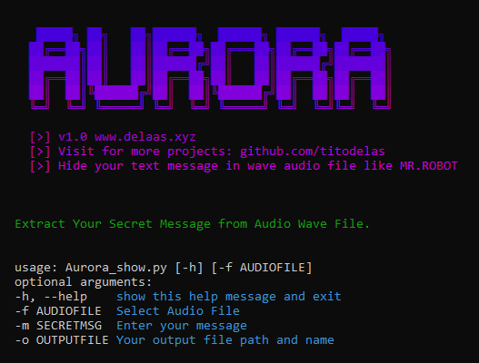

Aurora Wave is a Python-based program for simple audio steganography. You can hide your secret text messages in wave audio files. Play this audio in any media player and secretly share your private message with anyone. The only difference you will notice is a small noise on the original audio, nothing very big, it will seem like you have a bad mic, or just bad audio.

git clone https://github.com/titodelas/Aurora-Wave.git
cd Aurora-Wave
Aurora Wave has two Python scripts:
python Aurora_hidden.py -f Demo.wav -m "Secret Msg" -o output.wav
python Aurora_show.py -f output.wav